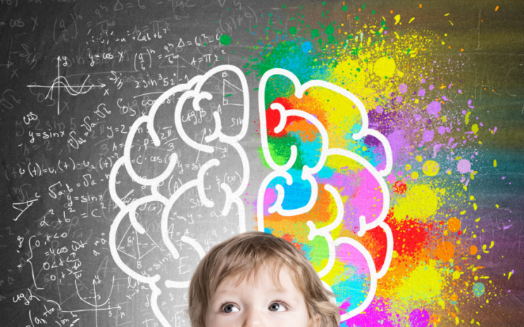

A U T I S M O

¿Qué es el Autismo?
El Trastorno del Espectro Autista (TEA) es una condición del neurodesarrollo que afecta la comunicación, el comportamiento y la interacción social.
Mitos y Verdades
- Mito: Las personas con autismo no sienten emociones.
- Verdad: Sí sienten emociones, pero pueden expresarlas de forma distinta.
- Mito: Todos los autistas son iguales.
- Verdad: El espectro autista es muy amplio y diverso.